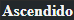

|
|
 |
|---|
Quase todos os Despertos eram agradáveis de se ver, mas Sunny estava longe de ser o mais notável em termos de aparência entre eles. Havia algo nele que atraía a atenção e quase a exigia. Ele ainda era um jovem pálido, com cabelos escuros, estatura baixa, constituição delicada e esguia e pele branca perfeita. Seus olhos escuros tinham um brilho bem-humorado e levemente malicioso. Ele não era exatamente bonito, mas devido à sua baixa estatura, pele clara e cabelos escuros, parecia uma linda boneca de porcelana.
Havia uma estranheza sutil nele que parecia que cada movimento seu, cada palavra, não era exatamente como deveria ser. Não era realmente errado, mas também não era completamente errado. Não estava realmente errado, mas também não estava completamente certo. Essa qualidade era tão perturbadora quanto magnética.
| Primeiro Pesadelo | Segundo Pesadelo |
|---|
Quando Sunny finalmente caiu em um sono profundo, ele sonhou com uma montanha. O fluxo do tempo foi revertido. Lá, uma caravana de escravos apareceu, descendo a montanha em meio ao clamor das correntes. Começando como um escravo impotente, acorrentado e já meio morto, Sunny ficou perplexo. O corpo que ele usou para o julgamento era o de um escravo do templo, nascido como escravo, do último templo do Deus das Sombras que foi destruído pelos imperiais. O Império deles era protegido pelo poderoso Deus da Guerra.
"Um escravo sem nome subiu a Montanha Negra. Heróis e monstros caíram por suas mãos. Inabalável, ele entrou no templo em ruínas de um deus há muito esquecido e derramou seu sangue no altar sagrado. Os deuses estavam mortos e, ainda assim, escutavam".
--Avaliação do Feitiço, Capítulo 15 Shadow Slave
Durante o teste, ele derrotou uma fera adormecida, três humanos adormecidos desconhecidos, um humano desperto, um tirano desperto e recebeu a bênção do Deus das Sombras. Ele alcançou o impossível e o Feitiço lhe deu "Glorioso" como avaliação final, concedeu-lhe um Nome Verdadeiro, "Perdido da Luz", e até lhe deu um Aspecto Divino, algo que nunca havia sido ouvido antes.